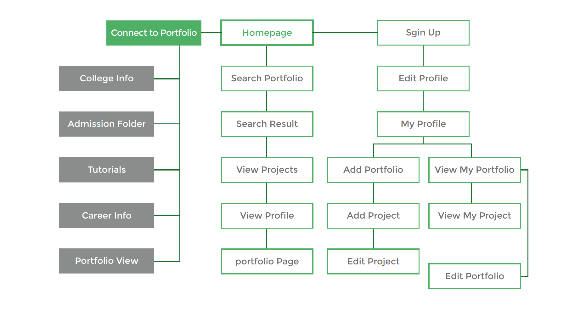

Foliolink
Product Design
FolioLink is a networking website that connects prospective students with fellow peers who are preparing admissions portfolios for art and design programs with peer portfolios that have been accepted by prestigious programs.
Uploading art and design works is one of the most important processes of being a part of the community for the users. So the main focus was to design a simple and intuitive uploading experience. The other important aspect of using the website is the ability to search portfolios by school and the major of admission. Since each page contains an ample collection of thumbnail images and portfolio information, I opted for a clean and organized layout design.
UX | UI
Role
Product / Visual Designer
- Create an easy and simple experience in searching and viewing the portfolios
- Facilitate the portfolio uploading process
- Provide an intuitive experience in editing “My Project”
Foliolink has six categories of services: Connect to Portfolio, College Info, Admission Folder, Tutorials, Career Info, and Portfolio View. “Connect to Portfolio” is the most important function of Foliolink, so our team put much emphasis on developing a simple and easy searching, viewing and uploading process though well-crafted user workflow.
With a series of iterations, high-fidelity wireframes were made. While having emendation process, we invited our interns to test the workflow and functions. With their feedback, we build a solid workflow and layouts for a better user experience.
After testing out UI ideas, I started applying UI components and adding more details based on the wireframes. Font sizes, button colors, icons and other UI components were built into a visual design system to have cohesive visuals and consistent user experience.


Go to Top